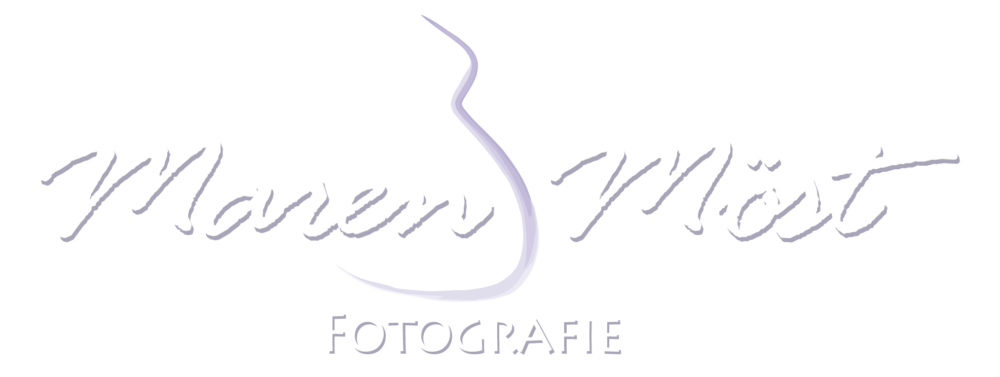
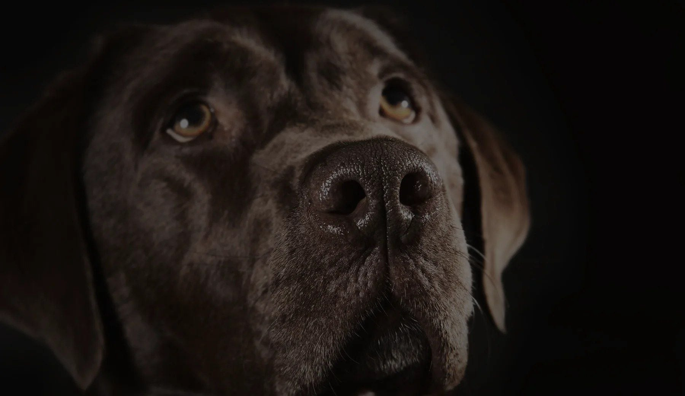
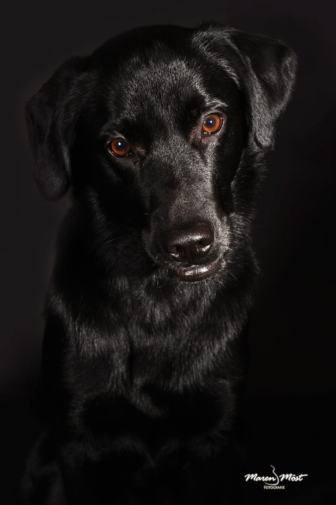

01 · Ankommen
Erst Ruhe, dann Kamera.
Ihr Hund darf das Studio kennenlernen, bevor wir mit Licht und Kamera arbeiten.

Fine-Art-Hundefotografie
Ruhige Studio-Porträts aus Waiblingen für Menschen, die in ihrem Hund nicht nur ein Haustier sehen, sondern Familie.

Über zehn Jahre · Fine-Art-Porträts für Hunde
Möst Fotografie
In meinem Studio in Waiblingen entstehen keine Termine im Minutentakt, sondern ruhige, emotionale Begegnungen. Mit viel Zeit, Feingefühl und professionellem Licht halte ich die Persönlichkeit Ihres Hundes fest.
Zeitlos, elegant und mit bleibendem Wert, keine Bilder von der Stange, sondern Kunstwerke, die ein Leben lang berühren.

Das Atelier
Ruhige Lichtführung, feine Blickmomente und eine Bildsprache, die nicht laut wirken muss.
Atelierlicht Charakter Wandkunst Album
Ablauf
Ein Shooting ist bei mir kein schneller Termin, sondern ein ruhiger Weg von rund 2,5 Stunden: Ihr Hund kommt an, wir arbeiten mit professionellem Licht, und am Ende wählen Sie Bilder, die bleiben.
01 · Ankommen
Ihr Hund darf das Studio kennenlernen, bevor wir mit Licht und Kamera arbeiten.
02 · Studio
Mit professioneller Lichtführung entsteht ein Porträt, das den Charakter Ihres Hundes sichtbar macht.
03 · Auswahl
Gemeinsam wählen wir Motive für Prints, Wandkunst oder ein hochwertiges Album.
Google-Bewertungen
5,0 · 40 Bewertungen auf Google
5 von 5 Sternen
Wir waren letzten Monat bei Maren zum Hunde-Fotoshooting. Von der ersten Kontaktaufnahme bis zum Erhalt der ausgewählten Fotos verlief alles reibungslos und unkompliziert. Maren ist eine unglaublich sympathische Person. Sie hat mit viel Geduld, Einfühlungsvermögen und Professionalität dafür gesorgt, dass wir jetzt unvergessliche Erinnerungen von unseren Vierbeinern an der Wand hängen haben. Von Herzen vielen Dank!!!
5 von 5 Sternen
Ich war mit meiner Rottweiler Hündin bei Maren und wir hatten ein super tolles Erlebnis. Es war eine total entspannte Atmosphäre und Maren hat gute Tipps und Ideen gegeben. Wir haben immer wieder Pausen gemacht und so war es sowohl für mich als auch für meine Hündin eine entspannte und super Erfahrung. Die Bilder sind wunderschön geworden, kann ich somit nur weiterempfehlen.
5 von 5 Sternen
Ich HASSE Fotos. Aus gegebenem Anlass mit den Hunden und Partnerin dort gewesen. Und selbst für mich hat Sie es geschafft es ein wunderschönes wiederholbedürftiges Erlebnis werden zu lassen. Und jedes einzelne Foto ist einfach perfekt. Wir sehen uns definitiv wieder.
Leistungen
Drei Wege zu Bildern, die einen festen Platz bei Ihnen zu Hause finden: Porträt, Verbindung und fertige Kunstwerke.
Ausdrucksstarke Einzelporträts im Fine-Art-Stil, die Persönlichkeit Ihres Hundes, fein und zeitlos gezeichnet.
Hunde-Porträts entdeckenDie besondere Verbindung zwischen Ihnen und Ihrem Hund, echte Nähe, ehrlich und emotional eingefangen.
Mensch & Hund entdeckenIhre Lieblingsmomente als edle Fine-Art-Produkte: großformatige Wandbilder, feine Prints und luxuriöse Fotoalben.
Wandkunst & Alben entdeckenPortfolio
Fine-Art-Wandkunst
Aus den stärksten Motiven entstehen hochwertige Prints, Wandbilder und Alben. Ruhig inszeniert, fein retuschiert und so ausgewählt, dass Ihr Hund auch in vielen Jahren noch genau so berührt.
Termin anfragen
Ein paar Worte zu Ihrem Hund reichen für den ersten Schritt. Ich melde mich persönlich und in Ruhe bei Ihnen.